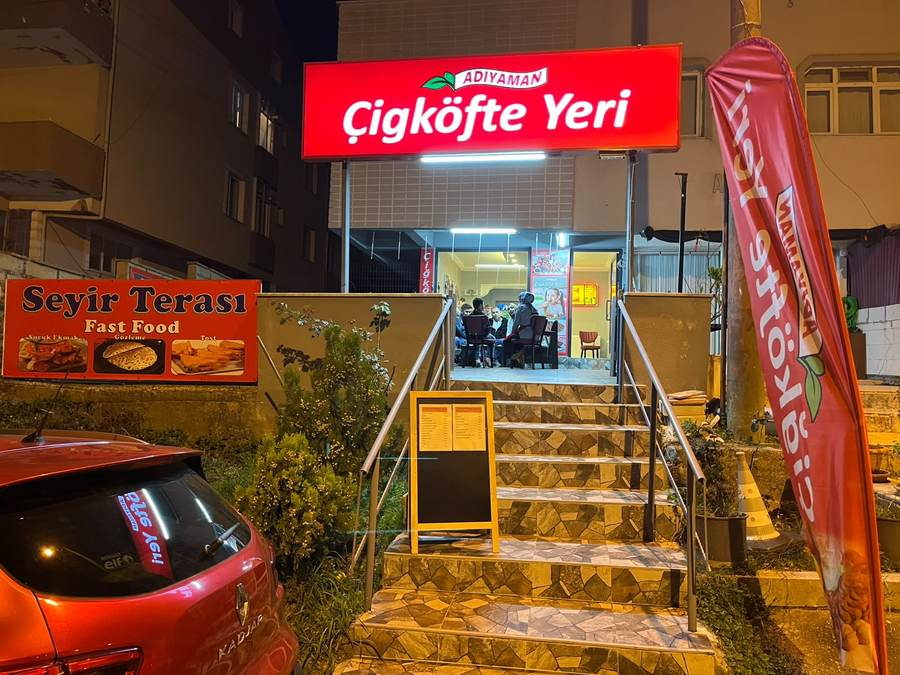
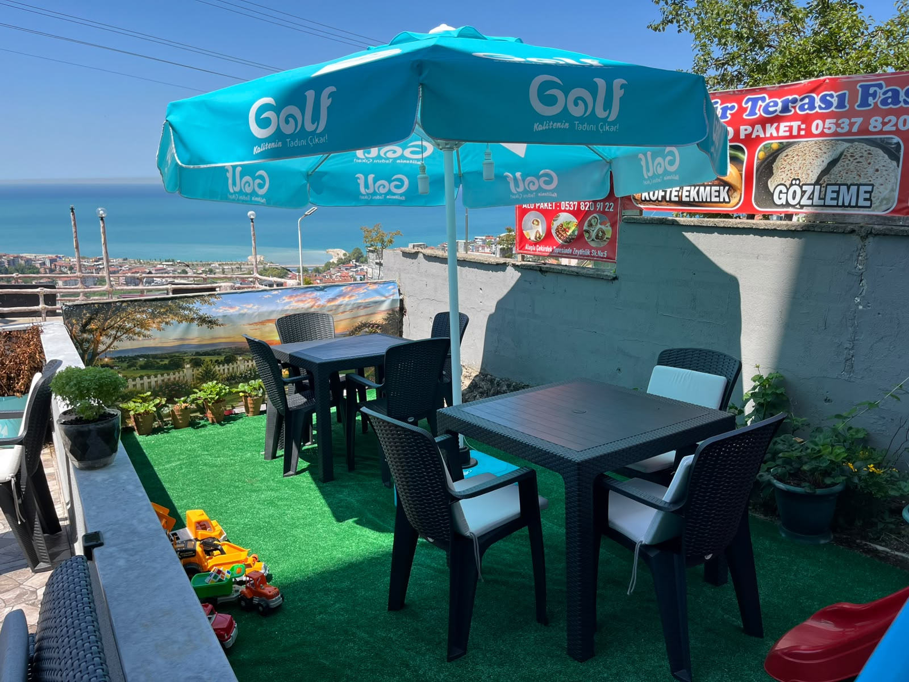
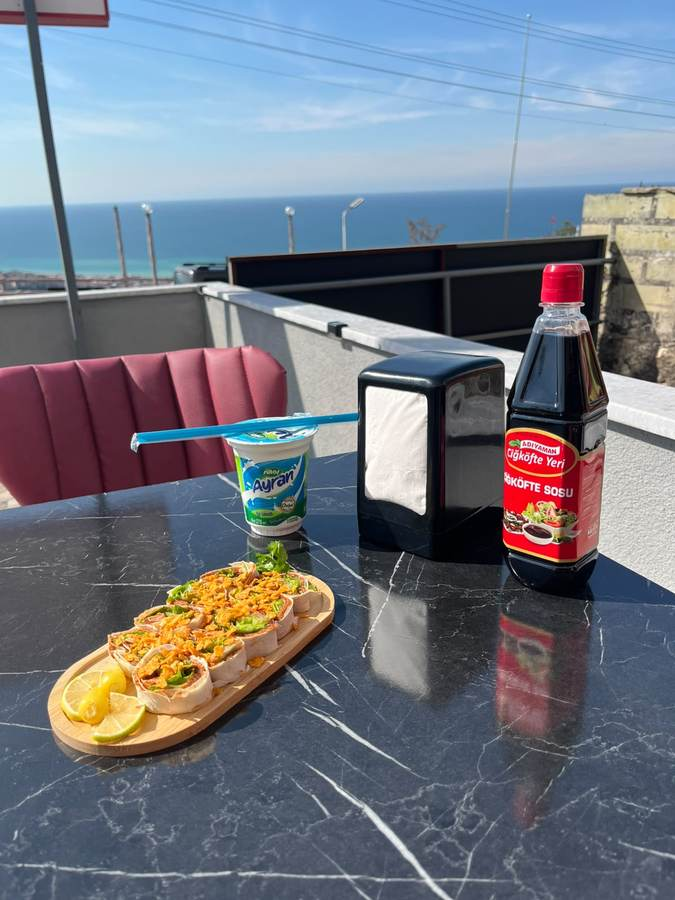
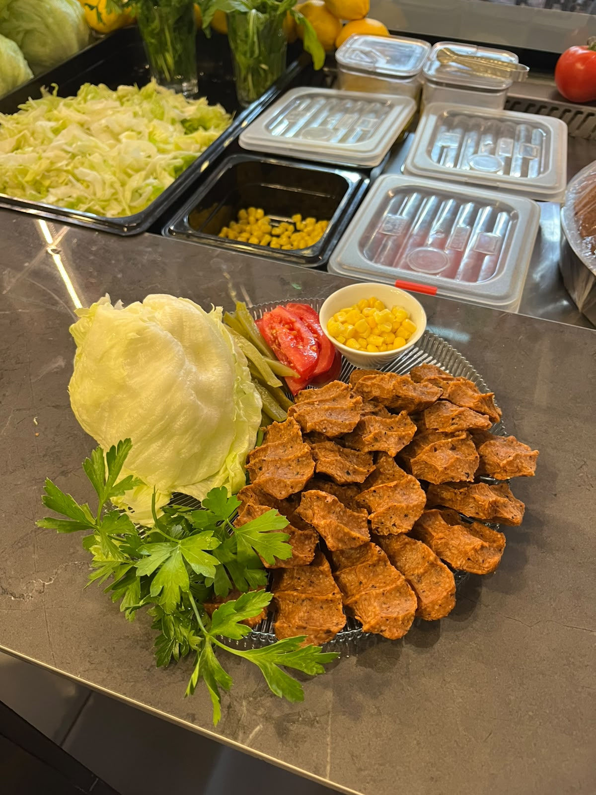
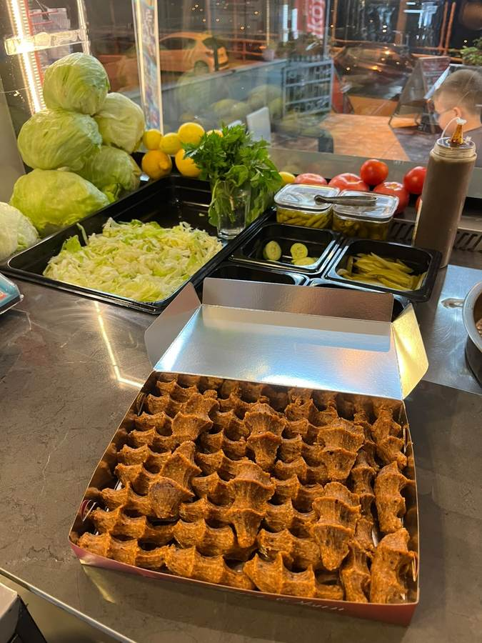
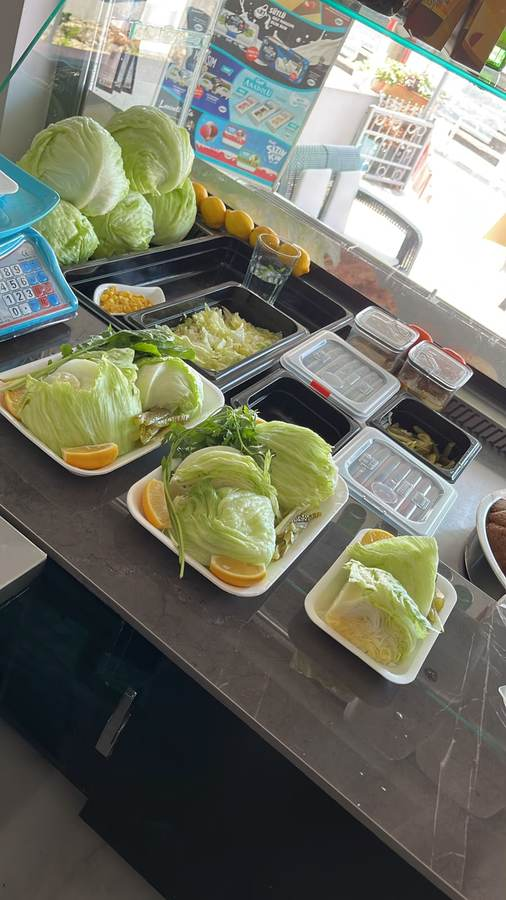
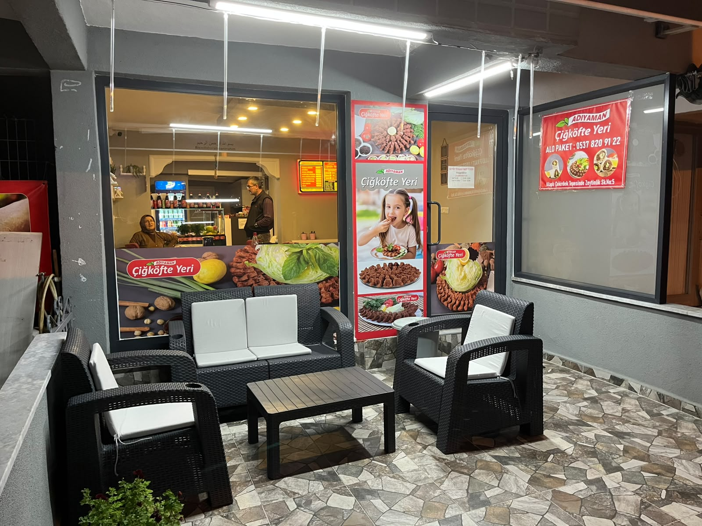
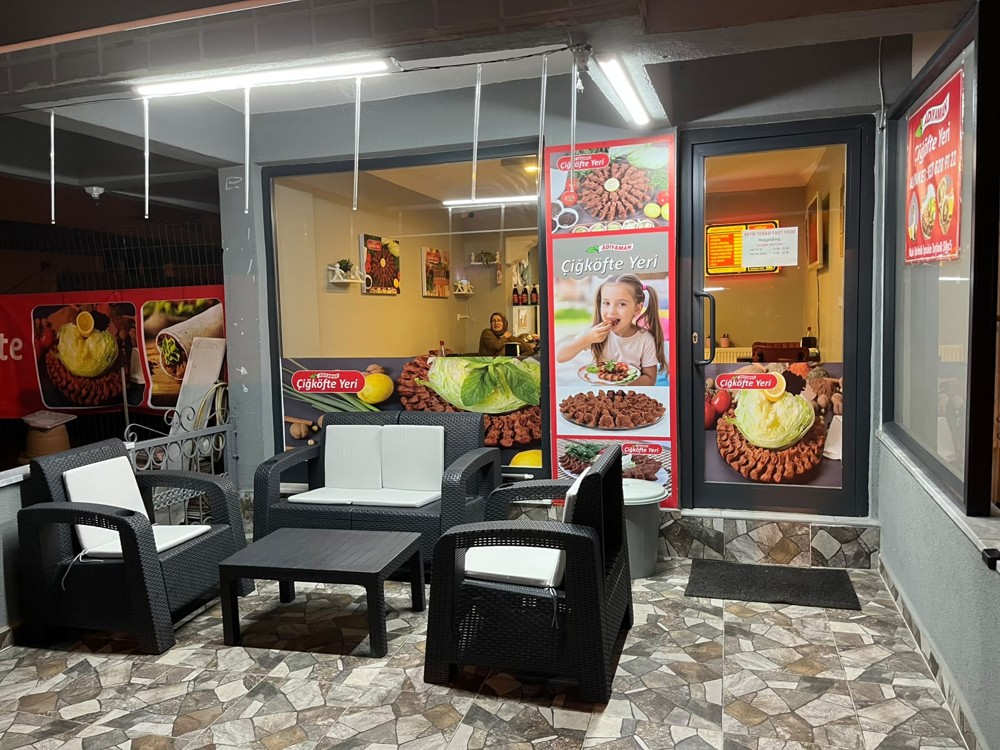

Günlük taze çiğ köfte, çıtır doritos dürümler, köfte ekmek, gözleme ve bazlama tost. Seyir terasında otur, deniz havasıyla ye, tazeliği hisset.
Gerçek Adıyaman çiğ köfte lezzeti, bol nar ekşisi ve taze yeşillikle.
Dürümler, köfte ekmek, gözleme ve tost tek terasta toplandı.
Beğendiğini seç, hemen ara. 0537 820 91 22
Instagram'daki tanıtım videomuzu izle, ortamı gör, canın çeksin. Beğendiysen takip etmeyi unutma 👇


ÇEKİRDEK TEPESİSeyir Terası Fast Food, Adıyaman Çiğ Köfte Yeri Alaplı şubesi olarak Çekirdek Tepesi'nde kuruldu. Amacımız basit: taze malzeme, hızlı servis, güler yüz ve manzara.
Sabah tezgâha çıkan çiğ köfte akşama bitiyor. Dürümden porsiyona, köfte ekmekten gözlemeye kadar her şey sipariş üstü hazırlanıyor. Terasta oturup Alaplı'yı izlerken yemek başka güzel oluyor.
Tezgâhtan terasa, dürümden manzaraya — hepsi kendi dükkânımızdan.





